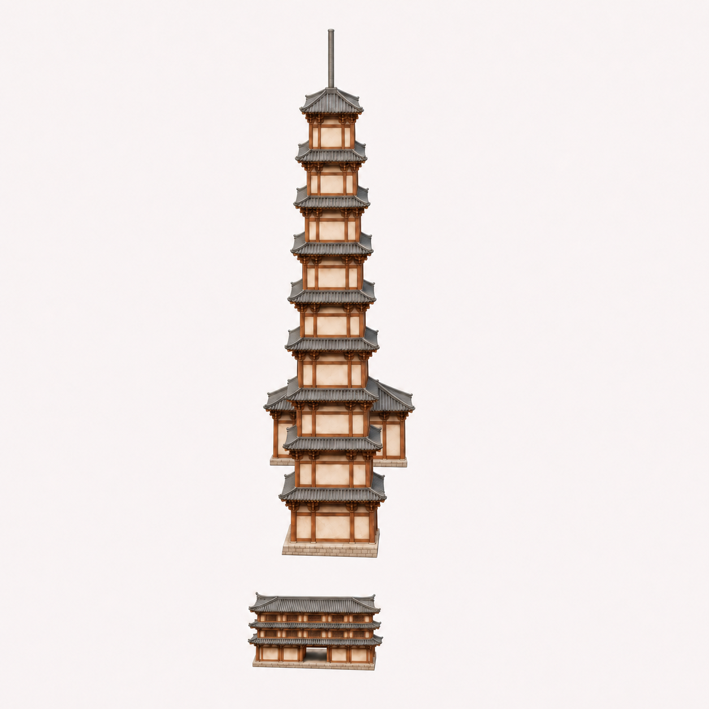
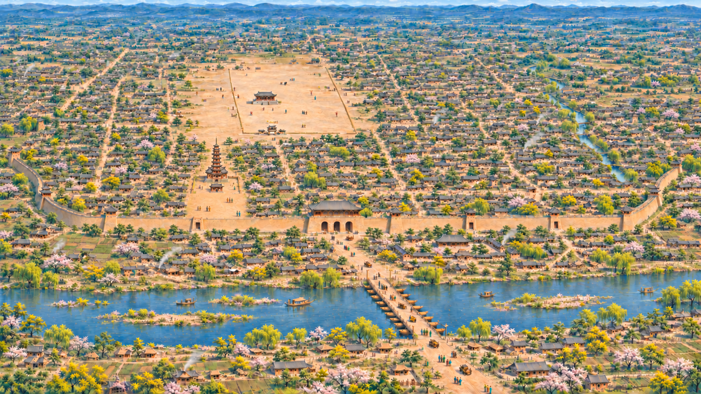

永宁寺局部研究 · 2026-11-24
从基址核对到全景回嵌
先对照地面轮廓，再查看局部修正，最后回到完整画面。三幅图保留各自原始比例，实际审查结果与图像同时展示。

02 / 03
修正局部图


塔座前缘已接近冻结轮廓；南门前缘仍低约11～13像素，完整基址未通过。本图用于审查建筑表现。
打开原尺寸图03 / 03
全景回嵌预览


全景回嵌预览，已清除旧低位重复门；小门仅一层门身清楚可辨，三层结构未保留，画面其他区域也发生重绘，未通过全景验收。
打开原尺寸图从实际图像与核对记录读取
本轮审查记录
- 叠加图使用同一冻结底稿与显示比例，逐项区分来源轮廓、实见材料边、实际遮挡，以及没有实体对应的来源控制。
- 选定局部保留九层木塔、三层南门、门塔独立基脚及后殿在塔后的关系，原有彩色控制线已清除。
- 塔座前缘三点纵向差约−0.7～+1.2像素；侧缘与四角仍未全部重合。南门前缘仍低约11～13像素，后殿左前缘约低6像素。
- 全景第三版已移除旧低位重复门，未见两个南门并存；小门仅一层可占用门身清楚可辨，主檐与屋脊不等于三层，不能继承局部图的三层判断；门前基脚约低6～8个全景像素且东侧偏宽。
- 回嵌保留相近的城市、河流与桥梁大构图，但编辑区域之外约99.992%的像素发生变化，RGB平均绝对差约15.27/255；不能声称外部画面原样不动。
核对位置与计算过程保留在几何记录；图像身份与输入见来源记录，完整判断见审查原件。
地面关系与建筑表现分开判断
地面控制沿用同一冻结变换，不随生成图移动。局部塔座前缘三点约差−0.7～+1.2像素，但侧缘、若干角点与南门仍不吻合；可见材料边、遮挡与仅来源控制分别登记。
共同透视底稿约束本轮图像对照；图中位置不产生新的实测坐标，上部建筑表现也不构成已证的历史复原。
仍保留的限制
- 上述局部像素读数在1254×1254图内，边缘判读约有±2像素不确定度，不是遗址实测精度，也不产生新的古代坐标。
- 南门前缘、塔座侧缘和若干角点尚有残差；遮挡的后侧基脚、后殿中央与实体寺墙不能据此验收。
- 佛殿仅对刊载基址方框；四处基座凸部不自动解释为阶道、踏步、坡度或栏杆，木塔地基大框不解释为地上塔院。
- 全景预览的三层小门、基脚与寺墙仍须继续修正；大范围纹理和色调重绘亦未获批准。
- 本轮为独立局部研究预览，既有六次V14拒用记录不变；未接受完整全景，也未批准替换V12首页。
局部观察不覆盖既有全景拒用结论，也不改变当前首页的批准状态。
下载三图与核对原件
图像、来源、几何和审查分别下载。发布清单记录每项实际文件的大小与 SHA-256。